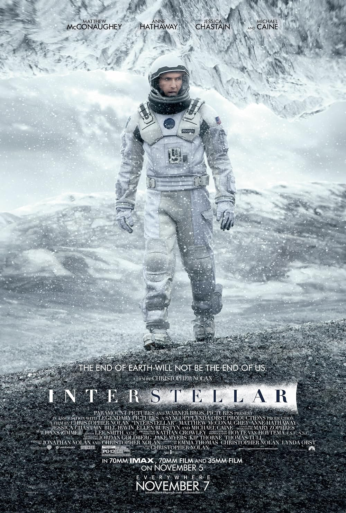

การ์กันชัว
หลุมดำมวลมหาศาลที่หมุนเร็วเกือบถึงขีดจำกัดของสัมพัทธภาพ จานพอกพูนมวลของมันคือแสงเดียวในระยะหลายพันล้านกิโลเมตร และแรงโน้มถ่วงของมันก็บิดแสงนั้นเป็นวงแหวนที่คุณเห็น
ภาพยนตร์ของ คริสโตเฟอร์ โนแลน · ค.ศ. 2014 · 169 นาที · 70 มม. ไอแม็กซ์
อินเตอร์สเตลลาร์
“จุดจบของโลก จะไม่ใช่จุดจบของเรา”THE END OF EARTH WILL NOT BE THE END OF US.
“มนุษย์เกิดมาบนโลก แต่มันไม่เคยเป็นที่ที่เราควรจะตาย”
01 — ภารกิจ
พืชผลล้มตายทีละสายพันธุ์ โรคไบต์กัดกินทุกสิ่ง วิศวกรคนสุดท้ายถูกฝึกให้กลับไปเป็นเกษตรกร พายุฝุ่นกลบมิดทุกอย่างที่เหลือของโลก และนาซากำลังทำงานลับ ๆ
เมื่ออดีตนักบินอย่าง คูเปอร์ บังเอิญเจอฐานยิงที่ถูกซ่อนไว้ เขาต้องเลือกระหว่างอยู่กับลูก ๆ หรือบินผ่านรูหนอนใกล้วงโคจรเสาร์ เพื่อตามหาดาวที่มนุษย์อยู่ได้ฝั่งตรงข้ามของกาแล็กซี ภารกิจนี้ชื่อ ลาซารัส นักวิทยาศาสตร์สิบสองคนไปก่อน ทุกวันนี้ยังมีสัญญาณจากหนึ่งในนั้น
สิ่งที่เขาพบคือหลุมดำมวลมหาศาลชื่อ การ์กันชัว ดาวที่ต้องเลือกอีกสามดวง หุ่นยนต์ที่มีปุ่มอารมณ์ขัน และกฎฟิสิกส์ข้อหนึ่งที่จะทำให้เขาต้องจ่ายคืนด้วยทุกปีของชีวิตลูกสาว
02 — ยาน
โมดูลภารกิจสิบสองโมดูลต่อกันด้วยอุโมงค์เป็นวงแหวน หมุนรอบแกนกลางเพื่อสร้างแรงโน้มถ่วงเทียม และแยกออกได้ทีละโมดูลเพื่อลงตั้งอาณานิคมบนดาวดวงใหม่ ลากเพื่อหมุน · เลื่อนล้อเพื่อซูม · คลิกจุดเพื่อดูรายละเอียด (โมเดลหมุนตามการเลื่อนหน้าด้วย)
จึงแสดงโมเดลแบบเรียลไทม์ไม่ได้ แต่ข้อมูลด้านล่างยังเล่าเรื่องยานได้ครบ
คลิกจุดบนโมเดลเพื่อดูระบบย่อยของยาน
03 — ฟิสิกส์
คิป ธอร์น ที่ปรึกษาวิทยาศาสตร์ของหนัง ยืนยันว่าหลุมดำในเรื่องต้องเป็นไปตามสมการสนามของไอน์สไตน์ ทีมวิชวลเอฟเฟกต์ของ Double Negative จึงสร้างโปรแกรมเรนเดอร์ตามสมการเหล่านั้น และภาพที่ได้ก็ถูกตีพิมพ์เป็นงานวิจัยจริงในเวลาต่อมา
ดาวมิลเลอร์อยู่ใกล้ขอบฟ้าเหตุการณ์ของการ์กันชัว แรงโน้มถ่วงมหาศาลดึงเวลาให้ช้าลง ลากแถบด้านล่างเพื่อดูว่าภารกิจบนผิวดาวหนึ่งครั้งต้องแลกด้วยอะไรบนโลก
บนโลก เวลาผ่านไป 21 ปี ลูกสาวของคุณโตขึ้นโดยไม่มีคุณ
หลุมดำมวลมหาศาลที่หมุนเร็วเกือบถึงขีดจำกัดของสัมพัทธภาพ จานพอกพูนมวลของมันคือแสงเดียวในระยะหลายพันล้านกิโลเมตร และแรงโน้มถ่วงของมันก็บิดแสงนั้นเป็นวงแหวนที่คุณเห็น
ดาวมหาสมุทรห่างจากขอบฟ้าเหตุการณ์ประมาณหนึ่งชั่วโมงแสง น้ำตื้นแค่เข่า ไม่มีแผ่นดิน และคลื่นสูงเป็นกิโลเมตรที่มาถึงเหมือนภูเขาเคลื่อนที่ทุกไม่กี่ชั่วโมง
เมฆน้ำแข็ง เกลือแอมโมเนียแช่แข็ง และสัญญาณที่โกหก ทุกดาวในบัญชีรายชื่อถูกให้คะแนนโดยมนุษย์เพียงคนเดียวที่ไม่มีอะไรจะเสียแล้ว
ในขอบฟ้าเหตุการณ์ เวลากลายเป็นสถานที่ที่เดินผ่านได้ อวกาศสี่มิติที่หนึ่งในนั้นถูกปิด และโครงตาข่ายอนันต์ของห้องนอนลูกสาวคนหนึ่ง
04 — ดนตรี
ฮันส์ ซิมเมอร์ เขียนท่วงทำนองหลักเสร็จก่อนที่คริสโตเฟอร์ โนแลน จะบอกเขาด้วยซ้ำว่าหนังเรื่องนี้เกี่ยวกับอะไร โนแลนยื่นกระดาษแผ่นเดียวที่เขียนถึงพ่อคนหนึ่งซึ่งกำลังจากลูกไป และขอสิ่งที่เหมือน คำสารภาพส่วนตัว — แต่ซิมเมอร์เขียนมันไว้แล้วหลายปีก่อน เพื่อตัวเขาเอง
เขาบันทึกเสียงที่ออร์แกนท่อของโบสถ์เทมเปิลในลอนดอน ด้วยการด้นสดมากกว่าการเขียนโน้ต และดึงสต็อปทั้งหมดออกมาให้สุด ผลลัพธ์คือดนตรีที่ฟังไม่เหมือนวงออร์เคสตรา แต่เหมือนลมหายใจ — เสียงติ๊กและต็อกใน “First Step” การไต่ขึ้นของ “Mountains” ความเศร้าที่ค่อย ๆ คืบของ “Stay” และการปลดปล่อยใน “Day One”
“อย่าไปอย่างอ่อนโยนสู่ราตรีอันแสนดี
ความชราควรลุกโชนและคลั่งในยามใกล้รุ่ง” ดีแลน โธมัส — ถูกอ่านสองครั้งในหนัง
05 — เหนือขอบฟ้าเหตุการณ์
ไฮเปอร์คิวบ์ที่มนุษย์จากมิติที่ห้าคลี่ออกมา เพื่อให้มนุษย์คนหนึ่งเอื้อมข้ามเวลาไปแตะชั้นหนังสือของลูกสาว กล่องนี้หมุนด้วย CSS ล้วน ๆ ไม่ต้องใช้ WebGL
06 — ภาพยนตร์

ในระบบ 70 มม. ไอแม็กซ์ · 70 มม. และ 35 มม.
5 พฤศจิกายน 2014 รอบพิเศษ
7 พฤศจิกายน 2014 ทุกโรงภาพยนตร์
ผู้ชมทั่วไป (PG-13) · ความยาว 169 นาที · เข้าฉายครบรอบทศวรรษในปี 2024 ด้วยระบบไอแม็กซ์อีกครั้ง
> _